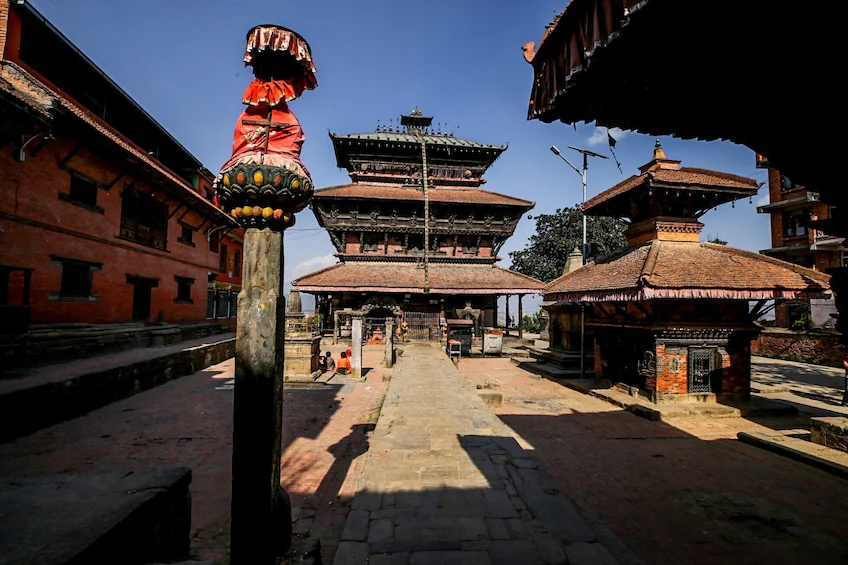
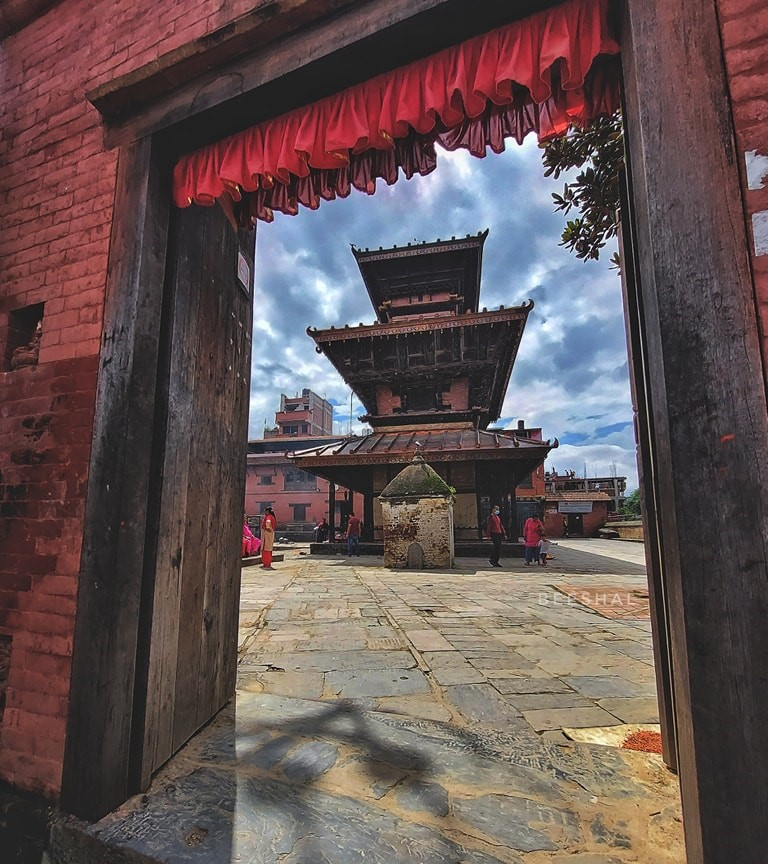
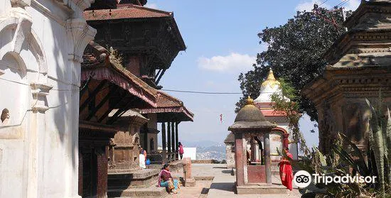
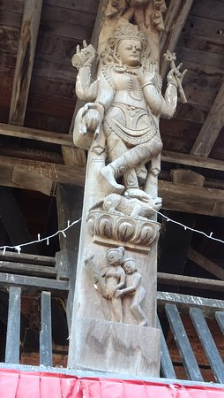
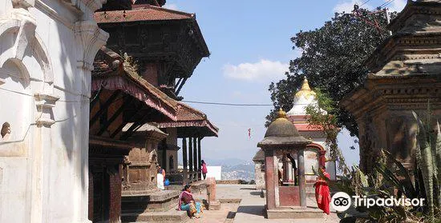
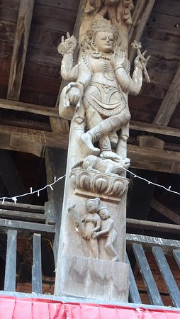

Baghbhairab Temple

The Bagh Bhairab Temple is a renowned religious site located in Kirtipur, a historic town near Kathmandu,
Nepal. The temple holds great significance for both the local community and devotees who visit from far and
wide.Dedicated to the deity Bhairab, a fierce manifestation of Lord Shiva, the temple's name translates to
"Tiger Bhairab" in English, as it is believed that Bhairab rides a tiger. This unique characteristic adds to the
temple's allure and intrigue.

The architecture of the Bagh Bhairab Temple is a fine example of traditional Newari style. The temple
structure features intricate wood carvings, elaborate pagoda-style roofs, and ornate doorways. These
artistic details showcase the craftsmanship and skill of the Newari artisans.
Inside the temple, visitors will find a sanctum housing the sacred idol of Bhairab. The idol, often depicted
with multiple heads and weapons, is adorned with vibrant clothing and decorative jewelry. Devotees offer
prayers, perform rituals, and seek blessings from Bhairab, believing that he protects them from evil and
grants their wishes.
The temple premises also include other smaller shrines dedicated to different deities. Devotees often visit
these shrines to pay their respects and offer prayers according to their religious beliefs. The atmosphere
around the temple is filled with a sense of devotion and spirituality.
 




A visit to the Bagh Bhairab Temple offers a glimpse into the spiritual and cultural essence of Nepal. The
harmonious blend of religious devotion, architectural beauty, and historical importance make it a must-see
attraction for those exploring the heritage sites of Kirtipur and the Kathmandu Valley.